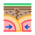

🔍 O que são Terremotos?

Terremotos são movimentos súbitos da crosta terrestre provocados pelo acúmulo e liberação de energia acumulada no interior da Terra. Eles geralmente ocorrem em regiões chamadas falhas geológicas, onde as placas tectônicas se encontram ou se movimentam, e podem variar desde tremores leves, quase imperceptíveis, até abalos muito fortes capazes de destruir construções, provocar deslizamentos de terra e gerar tsunamis quando acontecem próximos ao mar. A intensidade de um terremoto é medida por escalas como a Richter ou a Mercalli, que ajudam a determinar seu impacto e os possíveis danos às regiões atingidas.
 Causa dos terremotos
Os terremotos acontecem principalmente devido ao movimento das placas tectônicas, que flutuam sobre o magma do manto terrestre. A litosfera é formada por grandes blocos rochosos que se movimentam por forças internas da Terra, acumulando pressão nas regiões de contato entre eles. Quando essa pressão é liberada de forma repentina, ocorre o tremor de terra.
A maioria dos terremotos acontece em falhas geológicas, áreas onde esses blocos rochosos se encontram, resultando em movimentos intensos e liberação de grande energia.
Tipos de terremotos
Os terremotos podem ser classificados de acordo com características como intensidade, profundidade e grau de destruição. Uma forma comum de classificação é baseada na profundidade em que ocorrem:
Superficial: acontece próximo à superfície da Terra, sendo geralmente o mais destrutivo para construções e áreas habitadas.
Intermediário: ocorre em níveis médios da crosta terrestre, com intensidade e efeitos moderados.
Profundo: se origina em regiões mais profundas do planeta, muitas vezes abaixo da crosta, e costuma causar menos danos na superfície.
Intensidade dos terremotos
A intensidade e a magnitude de um terremoto são determinadas por meio de diferentes escalas de medição. Para isso, utilizam-se equipamentos chamados sismógrafos, que registram os tremores de terra.
Os dados coletados são analisados por especialistas para avaliar tanto a força do terremoto quanto os danos que ele pode causar.
A escala Richter é a mais comum para medir a intensidade, variando de 0 a 10, e indica a força do tremor. Já a escala Mercalli é utilizada para avaliar os efeitos e a destruição provocada na superfície, indo de I a XII, com foco nos impactos observados em construções,
paisagens e população.
Maiores terremotos já existentes
Ao longo da história, diversos terremotos marcaram o planeta, causando grandes perdas humanas e econômicas. Os mais devastadores geralmente ocorreram em regiões com alta densidade populacional ou em áreas onde as construções eram frágeis, aumentando os danos e o impacto sobre a população local.
1755 - Lisboa (Portugal), 8,7 graus de magnitude.
1960 - Valdívia (Chile), 8,5 graus de magnitude.
1975 - Liaoning (China), 7,2 graus de magnitude.
1992 - Califórnia (Estados Unidos), 7,5 graus de magnitude.
1995 - Kobe (Japão), 6,9 graus de magnitude.